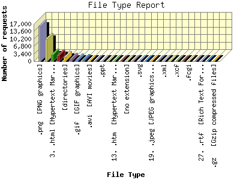

Report generated by Analog 6.0 and Report Magic 2.21
|
Web Server Statistics for "Harish Narayanan (hnarayan) - September 2007" Report generated by Analog 6.0 and Report Magic 2.21 |
The File Type Report identifies the type of information that is requested from the web site. GIF and JPG are the two types of graphic (image) files that are most commonly supported by web browsers. HTML (sometimes abbreviated HTM), ASP, and [directories] all represent actual pages. The number of image requests will almost always outnumber page requests as one page may contain several images.
This report shows all results. This report is sorted by number of requests.

| File Type | Number of requests | Number of bytes transferred | Percentage of the bytes | Percentage of the requests | |
|---|---|---|---|---|---|
| 1. | .png [PNG graphics] | 16,205 | 178.456 MB | 15.69% | 44.43% |
| 2. | .jpg [JPEG graphics] | 10,037 | 185.996 MB | 16.35% | 27.52% |
| 3. | .html [Hypertext Markup Language] | 3,031 | 45.340 MB | 3.99% | 8.31% |
| 4. | .css [Cascading Style Sheets] | 2,732 | 6.903 MB | 0.61% | 7.49% |
| 5. | [directories] | 1,816 | 7.592 MB | 0.67% | 4.98% |
| 6. | .js [JavaScript code] | 1,132 | 27.354 MB | 2.40% | 3.10% |
| 7. | .gif [GIF graphics] | 747 | 1.403 MB | 0.12% | 2.05% |
| 8. | .pdf [Adobe Portable Document Format] | 524 | 497.865 MB | 43.77% | 1.44% |
| 9. | .avi [AVI movies] | 49 | 10.351 MB | 0.91% | 0.13% |
| 10. | .mpg [MPEG movie] | 43 | 10.569 MB | 0.93% | 0.12% |
| 11. | .ppt | 42 | 139.236 MB | 12.24% | 0.12% |
| 12. | .asc | 25 | 28.031 KB | 0.00% | 0.07% |
| 13. | .htm [Hypertext Markup Language] | 21 | 2.314 MB | 0.20% | 0.06% |
| 14. | .ai | 14 | 20.780 MB | 1.83% | 0.04% |
| 15. | [no extension] | 12 | 7.607 KB | 0.00% | 0.03% |
| 16. | .zip [Zip archives] | 8 | 3.197 MB | 0.28% | 0.02% |
| 17. | .svg | 8 | 42.493 KB | 0.00% | 0.02% |
| 18. | .sh | 6 | 1.073 KB | 0.00% | 0.02% |
| 19. | .jpeg [JPEG graphics] | 4 | 20.615 KB | 0.00% | 0.01% |
| 20. | .py | 4 | 4.590 KB | 0.00% | 0.01% |
| 21. | .xml | 3 | 78.086 KB | 0.01% | 0.01% |
| 22. | .bz2 | 2 | 18.590 KB | 0.00% | 0.01% |
| 23. | .xcf | 2 | 35.690 KB | 0.00% | 0.01% |
| 24. | .psd | 2 | 0.000 B | 0.00% | 0.01% |
| 25. | .fcgi | 1 | 241.000 B | 0.00% | 0.00% |
| 26. | .cls | 1 | 4.160 KB | 0.00% | 0.00% |
| 27. | .rtf [Rich Text Format] | 1 | 615.000 B | 0.00% | 0.00% |
| 28. | .old | 1 | 6.336 KB | 0.00% | 0.00% |
| 29. | .gz [Gzip compressed files] | 1 | 0.000 B | 0.00% | 0.00% |
This report was generated on October 30, 2007 16:30.
Report time frame September 1, 2007 00:16 to September 30, 2007 23:55.
| Web statistics report produced by: | |
 Analog 6.0 Analog 6.0 |  Report Magic 2.21 Report Magic 2.21 |